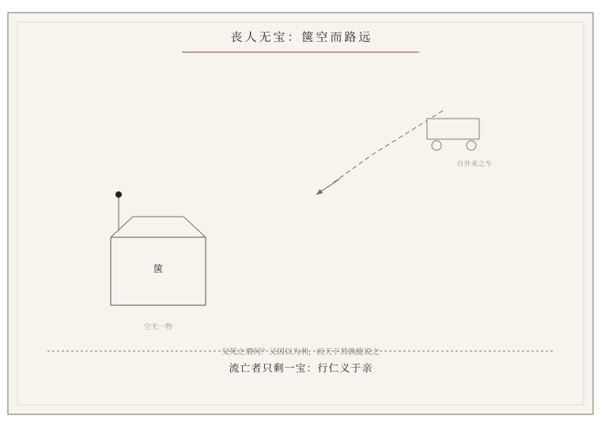

檀弓下 · 四·十一 · 第 336 课
晋献公之丧，秦穆公使人吊公子重耳，且曰：「寡人闻之，亡国恒於斯，得国恒於斯。虽吾子俨然在忧服之中，丧亦不可久也，时亦不可失也。孺子其图之。」以告舅犯。舅犯曰：「孺子其辞焉！丧人无宝，仁亲以为宝。父死之谓何？又因以为利，而天下其孰能说之？孺子其辞焉！」
说什么事：晋献公死，重耳流亡在翟。秦穆公遣使来吊，吊毕又递一句「得国的时机就是现在」。重耳把这话告诉舅犯，舅犯教他辞。
落在哪一层：以「义」量机。论「父死之际，有人递来机会」时礼的第一反应。
为何编在此位：三百三十五课论名分之链，此课论名分之断——有人递来的东西，正是要你断链。
【经】晉獻公之喪，秦穆公使人弔公子重耳，且曰：「寡人聞之，亡國恆於斯，得國恆於斯。雖吾子儼然在憂服之中，喪亦不可久也，時亦不可失也。孺子其圖之。」以告舅犯。舅犯曰：「孺子其辭焉！喪人無寶，仁親以為寶。父死之謂何？又因以為利，而天下其孰能說之？孺子其辭焉！」
【注】献公杀其世子申生，重耳辟难出奔，是时在翟，就吊之。／言在丧代之际。劝其反国，意欲纳之。丧谓亡失位。孺，穉也。／舅犯，重耳之舅狐偃也，字子犯。／宝谓善道可守者，仁亲，亲行仁义。／欲反国求为后，是利父死。／说犹解也。
【疏】使者吊重耳，重耳受吊礼已毕，使者出门，则应遂还宾馆，使者方须致穆公之命以劝重耳，故言「且曰」。言「且」者，非特吊耳，「且」者，兼有馀事。／言此丧祸交代之际，是得国失国之机，求之则得，不求则失。／言父身死亡，谓是何事，正是凶祸之事。既是凶祸，岂得又因此凶祸以有为已利。
且曰 「且」表兼有馀事。吊之外，另有话说。
亡国恒於斯，得国恒於斯 失国与得国，常在此丧祸交代之际。「斯」指此际。
俨然 端静庄重之貌。
忧服 居丧之服。
丧亦不可久 「丧」此指亡失位、流亡在外，非指丧服。
孺子 对年少者之称，此指重耳。
舅犯 狐偃，字子犯，重耳之舅，故称舅犯。
丧人无宝，仁亲以为宝 流亡之人无以为宝，唯以「行仁义于亲」为宝。
孰能说之 「说」读如解，谁能替你解释、开脱。
晋献公死，秦穆公派人来吊公子重耳，吊毕又说：「寡人听说，失国常在这时候，得国也常在这时候。虽然您端庄地处在忧服之中，流亡在外也不可太久，时机也不可失掉。您考虑一下吧。」重耳把这话告诉舅犯。舅犯说：「您辞掉它！流亡之人没有别的宝，只把行仁义于亲当作宝。父亲死了，这是什么样的事？竟又要借它图利，天下谁还能替您解释？您辞掉它！」
此章是一段对话，三人各说一句：使者递机，舅犯辞机，重耳从舅犯。
全章最重的一句是「丧人无宝，仁亲以为宝」。这一句把「宝」字从财货、从国土、从君位，挪到了一件事上：在父亲死的时候，不做对不起父亲的事。
第二重是「父死之谓何？又因以为利」。这是反问，不是训诫。反问的力量在于：它不给你反驳的位置——你要反驳，就得说「父死正可利用」。
第一层 使者的话，句句是实话 「亡国恒于斯，得国恒于斯」，此话在春秋之世屡验。
「丧亦不可久，时亦不可失」，也是实情：流亡者久则势散，机失则不复。
穆公不是坏人，他所言皆是政治上正确的判断。此章之难，正在于对方说的全对。
第二层 舅犯所守的不是「情」，是「义」 舅犯不曾说「你父亲刚死，你忍心吗」。他说的是一件更硬的事：因父死而得国，则此事无从解释。
「天下其孰能说之」——「说」是解释、开脱。一个人若做了此事，纵得国，也将终身活在一个无法解释的行为里。
这不是道德的软语，是政治的长算：得国而失名，其国不可久。舅犯所守，恰是最高一层的利。
第三层 「丧人无宝」：把价值重新定义 流亡者常以「复国」为唯一价值。舅犯说：流亡者真正的宝，是「还能行仁义于亲」。
此句极冷：它承认你一无所有，然后把唯一剩下的东西定成宝。一旦定成宝，就不肯拿它去换任何东西。
礼的力量常在此处：不是禁止你去拿，是先告诉你手里还有什么。
第四层 重耳的从，是「辞」而不是「拒」 经文只记舅犯之教，未记重耳之答；下一节方见其答。
「辞」与「拒」不同：拒是硬顶，辞是婉谢。辞者，承认对方的好意，而不受其事业。此一节留下了这个分寸，使后文的对客辞令有了根。
第五层 今日之用：机会的形状 今人所遇之「机会」，多不在父丧之时，而其形相似：正当你有一件不能不做的事，有人递来一件可以大得的事，并说「过了就没有了」。
此节可学的是那一问：这件事，将来我能不能向人解释？若不能，则它不叫机会，叫代价。
与今日何干 今日职场、商场，多有「趁人之危」之机：对手有难、伙伴有丧、同行出事，正是扩张之候。此节不说不可扩张，只说：若此扩张的根据是别人的难，则无人能替你解释。可以把事做成，不能把话说圆——此即舅犯所谓「孰能说之」。
| 左 | 右 |
|---|---|
| 亡国恒於斯 | 失位之机 |
| 得国恒於斯 | 得位之机 |
| 丧亦不可久 | 流亡不可久 |
| 时亦不可失 | 机会不可失 |
| 孺子其图之 | 使者所劝 |
| 丧人无宝 | 流亡者无可守 |
| 仁亲以为宝 | 唯此为宝 |
| 因以为利 | 借父死图国 |
| 孰能说之 | 无从解释 |
| 孺子其辞焉 | 舅犯之教，再言 |
画一处荒居门外的旷地，视点平视。画面左下一人背影踞坐于席上（只画衣与肩，不画人面），身前放着一只空箧，箧盖开着，内里空无一物。右上方一道远路自画外斜入，路上有一乘车之影，示「机会」自外来。空箧与远路之间不画连线。赭色只用在箧沿。
